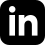
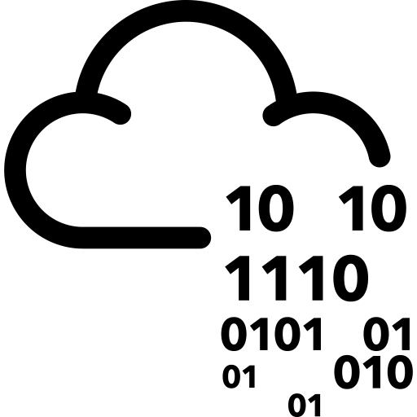
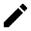
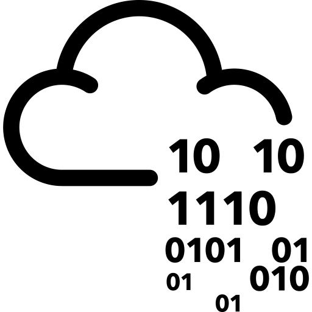
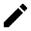

Aktif ve Pasif Bilgi Toplama
Hedef sistem veya sistemler hakkında bilgi toplama araçları ve araçların kullanımından bahsetmeye çalıştım. Keyifli okumalar dilerim.
Adli Bilişim Mühendisi & Siber Güvenlik Fırat üniversitesi Adli bilişim Mühendisliği öğrencisidir. Siber güvenlikte önemli bir yere sahip olan offensive tarafta çalışmalarını yürütüyor. sibermetin.com 'da yazarlık yapıyor. Farklı sınıf aralıklarında oluşan 25 kişilik ekibin takım kaptanlığını yapıyor. Onlara çeşitli eğitimler veriyor. Kariyer hedeflerini belirleyip yol haritası çizmelerine yardımcı oluyor.

 




Hedef sistem veya sistemler hakkında bilgi toplama araçları ve araçların kullanımından bahsetmeye çalıştım. Keyifli okumalar dilerim.

Sherlock aracı nedir? Nasıl kullanılır? Nasıl kurulur? hakkında yazım.

Siber güvenlikte offensive tarafta bulununan bir çok eğitime katılıyorum. Bunlarda almaya hak kazandığım bazı sertifikalarım.
BTK Akademi'de Caner KÖROĞLU tarafından verilen uygulamalı sızma testi eğitimini başarılı bir şekilde bitirip sertifikayı almaya hak kazandım.
Turkcell geleceği yazanlar platformunda Atıl SAMANCIOĞLU tarafından verilen siber güvenliğe giriş eğitimini başarılı bir şekilde bitirip sertifikayı almaya hak kazandım.
BTK Akademi'de Ömer Faruk ÇOLAKOĞLU tarafından verilen Veri tabanı Saldırıları ve Veri tabanı Güvenliği eğitimini başarılı bir şekilde bitirip sertifikayı almaya hak kazandım.
BTK Akademi'de Ömer Fatih ÇOŞKUN tarafından verilen Web Uygulama Güvenliği ve Web Sızma Tekniklerine Giriş eğitimini başarılı bir şekilde bitirip sertifikayı almaya hak kazandım.
Turkcell geleceği yazanlar platformunda Muhammed Burak ŞENTÜRK tarafından verilen network eğitimini başarılı bir şekilde bitirip sertifikayı almaya hak kazandım.
BTK Akademi'de Hasan ALATAŞ tarafından verilen Sosyal Mühendislik ve Oltalama eğitimini başarılı bir şekilde bitirip sertifikayı almaya hak kazandım.
BTK Akademi'de Hasan ALATAŞ tarafından verilen Siber Tehdit İstihbaratı ve Tehdit Avcılığı başarılı bir şekilde bitirip sertifikayı almaya hak kazandım.